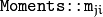
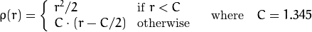

Structural Analysis and Shape Descriptors¶
moments¶
Calculates all of the moments up to the third order of a polygon or rasterized shape.
-
C++:
moments(InputArray array, bool binaryImage=false )¶
-
Python:
cv2.moments(array[, binaryImage]) → retval¶
-
C:
cvMoments(const CvArr* arr, CvMoments* moments, int binary=0 )¶
-
Python:
cv.Moments(arr, binary=0) → moments¶ Parameters: - array – Raster image (single-channel, 8-bit or floating-point 2D array) or an array (
 or
or  ) of 2D points (
) of 2D points (PointorPoint2f). - binaryImage – If it is true, all non-zero image pixels are treated as 1’s. The parameter is used for images only.
- moments – Output moments.
- array – Raster image (single-channel, 8-bit or floating-point 2D array) or an array (
The function computes moments, up to the 3rd order, of a vector shape or a rasterized shape. The results are returned in the structure Moments defined as:
class Moments
{
public:
Moments();
Moments(double m00, double m10, double m01, double m20, double m11,
double m02, double m30, double m21, double m12, double m03 );
Moments( const CvMoments& moments );
operator CvMoments() const;
// spatial moments
double m00, m10, m01, m20, m11, m02, m30, m21, m12, m03;
// central moments
double mu20, mu11, mu02, mu30, mu21, mu12, mu03;
// central normalized moments
double nu20, nu11, nu02, nu30, nu21, nu12, nu03;
}
In case of a raster image, the spatial moments  are computed as:
The central moments are computed as:
where is the mass center:
The normalized central moments are computed as:
Note
, , hence the values are not stored.
The moments of a contour are defined in the same way but computed using the Green’s formula (see http://en.wikipedia.org/wiki/Green_theorem). So, due to a limited raster resolution, the moments computed for a contour are slightly different from the moments computed for the same rasterized contour.
Note
Since the contour moments are computed using Green formula, you may get seemingly odd results for contours with self-intersections, e.g. a zero area (m00) for butterfly-shaped contours.
See also
HuMoments¶
Calculates seven Hu invariants.
-
C++:
HuMoments(const Moments& m, OutputArray hu)¶
-
C++:
HuMoments(const Moments& moments, double hu[7])¶
-
Python:
cv2.HuMoments(m[, hu]) → hu¶
-
C:
cvGetHuMoments(CvMoments* moments, CvHuMoments* hu_moments)¶
-
Python:
cv.GetHuMoments(moments) → hu¶ Parameters: - moments – Input moments computed with
moments(). - hu – Output Hu invariants.
- moments – Input moments computed with
The function calculates seven Hu invariants (introduced in [Hu62]; see also http://en.wikipedia.org/wiki/Image_moment) defined as:
![\begin{array}{l} hu[0]= \eta _{20}+ \eta _{02} \\ hu[1]=( \eta _{20}- \eta _{02})^{2}+4 \eta _{11}^{2} \\ hu[2]=( \eta _{30}-3 \eta _{12})^{2}+ (3 \eta _{21}- \eta _{03})^{2} \\ hu[3]=( \eta _{30}+ \eta _{12})^{2}+ ( \eta _{21}+ \eta _{03})^{2} \\ hu[4]=( \eta _{30}-3 \eta _{12})( \eta _{30}+ \eta _{12})[( \eta _{30}+ \eta _{12})^{2}-3( \eta _{21}+ \eta _{03})^{2}]+(3 \eta _{21}- \eta _{03})( \eta _{21}+ \eta _{03})[3( \eta _{30}+ \eta _{12})^{2}-( \eta _{21}+ \eta _{03})^{2}] \\ hu[5]=( \eta _{20}- \eta _{02})[( \eta _{30}+ \eta _{12})^{2}- ( \eta _{21}+ \eta _{03})^{2}]+4 \eta _{11}( \eta _{30}+ \eta _{12})( \eta _{21}+ \eta _{03}) \\ hu[6]=(3 \eta _{21}- \eta _{03})( \eta _{21}+ \eta _{03})[3( \eta _{30}+ \eta _{12})^{2}-( \eta _{21}+ \eta _{03})^{2}]-( \eta _{30}-3 \eta _{12})( \eta _{21}+ \eta _{03})[3( \eta _{30}+ \eta _{12})^{2}-( \eta _{21}+ \eta _{03})^{2}] \\ \end{array}](../../../_images/math/6f3e6a1dd05317afa7a9317d0d0e87bc3dacf7fd.png)
where stands for .
These values are proved to be invariants to the image scale, rotation, and reflection except the seventh one, whose sign is changed by reflection. This invariance is proved with the assumption of infinite image resolution. In case of raster images, the computed Hu invariants for the original and transformed images are a bit different.
See also
findContours¶
Finds contours in a binary image.
-
C++:
findContours(InputOutputArray image, OutputArrayOfArrays contours, OutputArray hierarchy, int mode, int method, Point offset=Point())¶
-
C++:
findContours(InputOutputArray image, OutputArrayOfArrays contours, int mode, int method, Point offset=Point())¶
-
Python:
cv2.findContours(image, mode, method[, contours[, hierarchy[, offset]]]) → contours, hierarchy¶
-
C:
cvFindContours(CvArr* image, CvMemStorage* storage, CvSeq** first_contour, int header_size=sizeof(CvContour), int mode=CV_RETR_LIST, int method=CV_CHAIN_APPROX_SIMPLE, CvPoint offset=cvPoint(0,0) )¶
-
Python:
cv.FindContours(image, storage, mode=CV_RETR_LIST, method=CV_CHAIN_APPROX_SIMPLE, offset=(0, 0)) → contours¶ Parameters: - image – Source, an 8-bit single-channel image. Non-zero pixels are treated as 1’s. Zero pixels remain 0’s, so the image is treated as
binary. You can usecompare(),inRange(),threshold(),adaptiveThreshold(),Canny(), and others to create a binary image out of a grayscale or color one. The function modifies theimagewhile extracting the contours. If mode equals toCV_RETR_CCOMPorCV_RETR_FLOODFILL, the input can also be a 32-bit integer image of labels (CV_32SC1). - contours – Detected contours. Each contour is stored as a vector of points.
- hierarchy – Optional output vector, containing information about the image topology. It has as many elements as the number of contours. For each i-th contour
contours[i], the elementshierarchy[i][0],hiearchy[i][1],hiearchy[i][2], andhiearchy[i][3]are set to 0-based indices incontoursof the next and previous contours at the same hierarchical level, the first child contour and the parent contour, respectively. If for the contourithere are no next, previous, parent, or nested contours, the corresponding elements ofhierarchy[i]will be negative. - mode –
Contour retrieval mode (if you use Python see also a note below).
- CV_RETR_EXTERNAL retrieves only the extreme outer contours. It sets
hierarchy[i][2]=hierarchy[i][3]=-1for all the contours. - CV_RETR_LIST retrieves all of the contours without establishing any hierarchical relationships.
- CV_RETR_CCOMP retrieves all of the contours and organizes them into a two-level hierarchy. At the top level, there are external boundaries of the components. At the second level, there are boundaries of the holes. If there is another contour inside a hole of a connected component, it is still put at the top level.
- CV_RETR_TREE retrieves all of the contours and reconstructs a full hierarchy of nested contours. This full hierarchy is built and shown in the OpenCV
contours.cdemo.
- CV_RETR_EXTERNAL retrieves only the extreme outer contours. It sets
- method –
Contour approximation method (if you use Python see also a note below).
- CV_CHAIN_APPROX_NONE stores absolutely all the contour points. That is, any 2 subsequent points
(x1,y1)and(x2,y2)of the contour will be either horizontal, vertical or diagonal neighbors, that is,max(abs(x1-x2),abs(y2-y1))==1. - CV_CHAIN_APPROX_SIMPLE compresses horizontal, vertical, and diagonal segments and leaves only their end points. For example, an up-right rectangular contour is encoded with 4 points.
- CV_CHAIN_APPROX_TC89_L1,CV_CHAIN_APPROX_TC89_KCOS applies one of the flavors of the Teh-Chin chain approximation algorithm. See [TehChin89] for details.
- CV_CHAIN_APPROX_NONE stores absolutely all the contour points. That is, any 2 subsequent points
- offset – Optional offset by which every contour point is shifted. This is useful if the contours are extracted from the image ROI and then they should be analyzed in the whole image context.
- image – Source, an 8-bit single-channel image. Non-zero pixels are treated as 1’s. Zero pixels remain 0’s, so the image is treated as
The function retrieves contours from the binary image using the algorithm
[Suzuki85]. The contours are a useful tool for shape analysis and object detection and recognition. See squares.c in the OpenCV sample directory.
Note
Source image is modified by this function. Also, the function does not take into account 1-pixel border of the image (it’s filled with 0’s and used for neighbor analysis in the algorithm), therefore the contours touching the image border will be clipped.
Note
If you use the new Python interface then the CV_ prefix has to be omitted in contour retrieval mode and contour approximation method parameters (for example, use cv2.RETR_LIST and cv2.CHAIN_APPROX_NONE parameters). If you use the old Python interface then these parameters have the CV_ prefix (for example, use cv.CV_RETR_LIST and cv.CV_CHAIN_APPROX_NONE).
Note
- An example using the findContour functionality can be found at opencv_source_code/samples/cpp/contours2.cpp
- An example using findContours to clean up a background segmentation result at opencv_source_code/samples/cpp/segment_objects.cpp
- (Python) An example using the findContour functionality can be found at opencv_source/samples/python2/contours.py
- (Python) An example of detecting squares in an image can be found at opencv_source/samples/python2/squares.py
drawContours¶
Draws contours outlines or filled contours.
-
C++:
drawContours(InputOutputArray image, InputArrayOfArrays contours, int contourIdx, const Scalar& color, int thickness=1, int lineType=8, InputArray hierarchy=noArray(), int maxLevel=INT_MAX, Point offset=Point() )¶
-
Python:
cv2.drawContours(image, contours, contourIdx, color[, thickness[, lineType[, hierarchy[, maxLevel[, offset]]]]]) → None¶
-
C:
cvDrawContours(CvArr* img, CvSeq* contour, CvScalar externalColor, CvScalar holeColor, int maxLevel, int thickness=1, int lineType=8 )¶
-
Python:
cv.DrawContours(img, contour, external_color, hole_color, max_level, thickness=1, lineType=8, offset=(0, 0)) → None¶ Parameters: - image – Destination image.
- contours – All the input contours. Each contour is stored as a point vector.
- contourIdx – Parameter indicating a contour to draw. If it is negative, all the contours are drawn.
- color – Color of the contours.
- thickness – Thickness of lines the contours are drawn with. If it is negative (for example,
thickness=CV_FILLED), the contour interiors are drawn. - lineType – Line connectivity. See
line()for details. - hierarchy – Optional information about hierarchy. It is only needed if you want to draw only some of the contours (see
maxLevel). - maxLevel – Maximal level for drawn contours. If it is 0, only
the specified contour is drawn. If it is 1, the function draws the contour(s) and all the nested contours. If it is 2, the function draws the contours, all the nested contours, all the nested-to-nested contours, and so on. This parameter is only taken into account when there is
hierarchyavailable. - offset – Optional contour shift parameter. Shift all the drawn contours by the specified .
- contour – Pointer to the first contour.
- externalColor – Color of external contours.
- holeColor – Color of internal contours (holes).
The function draws contour outlines in the image if or fills the area bounded by the contours if . The example below shows how to retrieve connected components from the binary image and label them:
#include "cv.h"
#include "highgui.h"
using namespace cv;
int main( int argc, char** argv )
{
Mat src;
// the first command-line parameter must be a filename of the binary
// (black-n-white) image
if( argc != 2 || !(src=imread(argv[1], 0)).data)
return -1;
Mat dst = Mat::zeros(src.rows, src.cols, CV_8UC3);
src = src > 1;
namedWindow( "Source", 1 );
imshow( "Source", src );
vector<vector<Point> > contours;
vector<Vec4i> hierarchy;
findContours( src, contours, hierarchy,
CV_RETR_CCOMP, CV_CHAIN_APPROX_SIMPLE );
// iterate through all the top-level contours,
// draw each connected component with its own random color
int idx = 0;
for( ; idx >= 0; idx = hierarchy[idx][0] )
{
Scalar color( rand()&255, rand()&255, rand()&255 );
drawContours( dst, contours, idx, color, CV_FILLED, 8, hierarchy );
}
namedWindow( "Components", 1 );
imshow( "Components", dst );
waitKey(0);
}
Note
- An example using the drawContour functionality can be found at opencv_source_code/samples/cpp/contours2.cpp
- An example using drawContours to clean up a background segmentation result at opencv_source_code/samples/cpp/segment_objects.cpp
- (Python) An example using the drawContour functionality can be found at opencv_source/samples/python2/contours.py
approxPolyDP¶
Approximates a polygonal curve(s) with the specified precision.
-
C++:
approxPolyDP(InputArray curve, OutputArray approxCurve, double epsilon, bool closed)¶
-
Python:
cv2.approxPolyDP(curve, epsilon, closed[, approxCurve]) → approxCurve¶
-
C:
cvApproxPoly(const void* src_seq, int header_size, CvMemStorage* storage, int method, double eps, int recursive=0 )¶ Parameters: - curve –
Input vector of a 2D point stored in:
std::vectororMat(C++ interface)Nx2numpy array (Python interface)CvSeqor ``CvMat(C interface)
- approxCurve – Result of the approximation. The type should match the type of the input curve. In case of C interface the approximated curve is stored in the memory storage and pointer to it is returned.
- epsilon – Parameter specifying the approximation accuracy. This is the maximum distance between the original curve and its approximation.
- closed – If true, the approximated curve is closed (its first and last vertices are connected). Otherwise, it is not closed.
- header_size – Header size of the approximated curve. Normally,
sizeof(CvContour)is used. - storage – Memory storage where the approximated curve is stored.
- method – Contour approximation algorithm. Only
CV_POLY_APPROX_DPis supported. - recursive – Recursion flag. If it is non-zero and
curveisCvSeq*, the functioncvApproxPolyapproximates all the contours accessible fromcurvebyh_nextandv_nextlinks.
- curve –
The functions approxPolyDP approximate a curve or a polygon with another curve/polygon with less vertices so that the distance between them is less or equal to the specified precision. It uses the Douglas-Peucker algorithm
http://en.wikipedia.org/wiki/Ramer-Douglas-Peucker_algorithm
See https://github.com/opencv/opencv/tree/master/samples/cpp/contours2.cpp for the function usage model.
ApproxChains¶
Approximates Freeman chain(s) with a polygonal curve.
-
C:
cvApproxChains(CvSeq* src_seq, CvMemStorage* storage, int method=CV_CHAIN_APPROX_SIMPLE, double parameter=0, int minimal_perimeter=0, int recursive=0 )¶
-
Python:
cv.ApproxChains(src_seq, storage, method=CV_CHAIN_APPROX_SIMPLE, parameter=0, minimal_perimeter=0, recursive=0) → contours¶ Parameters: - src_seq – Pointer to the approximated Freeman chain that can refer to other chains.
- storage – Storage location for the resulting polylines.
- method – Approximation method (see the description of the function
FindContours()). - parameter – Method parameter (not used now).
- minimal_perimeter – Approximates only those contours whose perimeters are not less than
minimal_perimeter. Other chains are removed from the resulting structure. - recursive – Recursion flag. If it is non-zero, the function approximates all chains that can be obtained from
chainby using theh_nextorv_nextlinks. Otherwise, the single input chain is approximated.
This is a standalone contour approximation routine, not represented in the new interface. When FindContours() retrieves contours as Freeman chains, it calls the function to get approximated contours, represented as polygons.
arcLength¶
Calculates a contour perimeter or a curve length.
-
C++:
arcLength(InputArray curve, bool closed)¶
-
Python:
cv2.arcLength(curve, closed) → retval¶
-
C:
cvArcLength(const void* curve, CvSlice slice=CV_WHOLE_SEQ, int is_closed=-1 )¶
-
Python:
cv.ArcLength(curve, slice=CV_WHOLE_SEQ, isClosed=-1) → float¶ Parameters: - curve – Input vector of 2D points, stored in
std::vectororMat. - closed – Flag indicating whether the curve is closed or not.
- curve – Input vector of 2D points, stored in
The function computes a curve length or a closed contour perimeter.
boundingRect¶
Calculates the up-right bounding rectangle of a point set.
-
C++:
boundingRect(InputArray points)¶
-
Python:
cv2.boundingRect(points) → retval¶
-
C:
cvBoundingRect(CvArr* points, int update=0 )¶
-
Python:
cv.BoundingRect(points, update=0) → CvRect¶ Parameters: points – Input 2D point set, stored in std::vectororMat.
The function calculates and returns the minimal up-right bounding rectangle for the specified point set.
contourArea¶
Calculates a contour area.
-
C++:
contourArea(InputArray contour, bool oriented=false )¶
-
Python:
cv2.contourArea(contour[, oriented]) → retval¶
-
C:
cvContourArea(const CvArr* contour, CvSlice slice=CV_WHOLE_SEQ, int oriented=0 )¶
-
Python:
cv.ContourArea(contour, slice=CV_WHOLE_SEQ) → float¶ Parameters: - contour – Input vector of 2D points (contour vertices), stored in
std::vectororMat. - oriented – Oriented area flag. If it is true, the function returns a signed area value, depending on the contour orientation (clockwise or counter-clockwise). Using this feature you can determine orientation of a contour by taking the sign of an area. By default, the parameter is
false, which means that the absolute value is returned.
- contour – Input vector of 2D points (contour vertices), stored in
The function computes a contour area. Similarly to
moments() , the area is computed using the Green formula. Thus, the returned area and the number of non-zero pixels, if you draw the contour using
drawContours() or
fillPoly() , can be different.
Also, the function will most certainly give a wrong results for contours with self-intersections.
Example:
vector<Point> contour;
contour.push_back(Point2f(0, 0));
contour.push_back(Point2f(10, 0));
contour.push_back(Point2f(10, 10));
contour.push_back(Point2f(5, 4));
double area0 = contourArea(contour);
vector<Point> approx;
approxPolyDP(contour, approx, 5, true);
double area1 = contourArea(approx);
cout << "area0 =" << area0 << endl <<
"area1 =" << area1 << endl <<
"approx poly vertices" << approx.size() << endl;
convexHull¶
Finds the convex hull of a point set.
-
C++:
convexHull(InputArray points, OutputArray hull, bool clockwise=false, bool returnPoints=true )¶
-
Python:
cv2.convexHull(points[, hull[, clockwise[, returnPoints]]]) → hull¶
-
C:
cvConvexHull2(const CvArr* input, void* hull_storage=NULL, int orientation=CV_CLOCKWISE, int return_points=0 )¶
-
Python:
cv.ConvexHull2(points, storage, orientation=CV_CLOCKWISE, return_points=0) → convexHull¶ Parameters: - points – Input 2D point set, stored in
std::vectororMat. - hull – Output convex hull. It is either an integer vector of indices or vector of points. In the first case, the
hullelements are 0-based indices of the convex hull points in the original array (since the set of convex hull points is a subset of the original point set). In the second case,hullelements are the convex hull points themselves. - hull_storage – Output memory storage in the old API (
cvConvexHull2returns a sequence containing the convex hull points or their indices). - clockwise – Orientation flag. If it is true, the output convex hull is oriented clockwise. Otherwise, it is oriented counter-clockwise. The assumed coordinate system has its X axis pointing to the right, and its Y axis pointing upwards.
- orientation – Convex hull orientation parameter in the old API,
CV_CLOCKWISEorCV_COUNTERCLOCKWISE. - returnPoints – Operation flag. In case of a matrix, when the flag is true, the function returns convex hull points. Otherwise, it returns indices of the convex hull points. When the output array is
std::vector, the flag is ignored, and the output depends on the type of the vector:std::vector<int>impliesreturnPoints=true,std::vector<Point>impliesreturnPoints=false.
- points – Input 2D point set, stored in
The functions find the convex hull of a 2D point set using the Sklansky’s algorithm
[Sklansky82]
that has
O(N logN) complexity in the current implementation. See the OpenCV sample convexhull.cpp that demonstrates the usage of different function variants.
Note
- An example using the convexHull functionality can be found at opencv_source_code/samples/cpp/convexhull.cpp
convexityDefects¶
Finds the convexity defects of a contour.
-
C++:
convexityDefects(InputArray contour, InputArray convexhull, OutputArray convexityDefects)¶
-
Python:
cv2.convexityDefects(contour, convexhull[, convexityDefects]) → convexityDefects¶
-
C:
cvConvexityDefects(const CvArr* contour, const CvArr* convexhull, CvMemStorage* storage=NULL )¶
-
Python:
cv.ConvexityDefects(contour, convexhull, storage) → convexityDefects¶ Parameters: - contour – Input contour.
- convexhull – Convex hull obtained using
convexHull()that should contain indices of the contour points that make the hull. - convexityDefects – The output vector of convexity defects. In C++ and the new Python/Java interface each convexity defect is represented as 4-element integer vector (a.k.a.
cv::Vec4i):(start_index, end_index, farthest_pt_index, fixpt_depth), where indices are 0-based indices in the original contour of the convexity defect beginning, end and the farthest point, andfixpt_depthis fixed-point approximation (with 8 fractional bits) of the distance between the farthest contour point and the hull. That is, to get the floating-point value of the depth will befixpt_depth/256.0. In C interface convexity defect is represented byCvConvexityDefectstructure - see below. - storage – Container for the output sequence of convexity defects. If it is NULL, the contour or hull (in that order) storage is used.
The function finds all convexity defects of the input contour and returns a sequence of the CvConvexityDefect structures, where CvConvexityDetect is defined as:
struct CvConvexityDefect
{
CvPoint* start; // point of the contour where the defect begins
CvPoint* end; // point of the contour where the defect ends
CvPoint* depth_point; // the farthest from the convex hull point within the defect
float depth; // distance between the farthest point and the convex hull
};
The figure below displays convexity defects of a hand contour:

fitEllipse¶
Fits an ellipse around a set of 2D points.
-
C++:
fitEllipse(InputArray points)¶
-
Python:
cv2.fitEllipse(points) → retval¶
-
C:
cvFitEllipse2(const CvArr* points)¶
-
Python:
cv.FitEllipse2(points) → Box2D¶ Parameters: points – Input 2D point set, stored in:
std::vector<>orMat(C++ interface)CvSeq*orCvMat*(C interface)- Nx2 numpy array (Python interface)
The function calculates the ellipse that fits (in a least-squares sense) a set of 2D points best of all. It returns the rotated rectangle in which the ellipse is inscribed. The algorithm [Fitzgibbon95] is used. Developer should keep in mind that it is possible that the returned ellipse/rotatedRect data contains negative indices, due to the data points being close to the border of the containing Mat element.
Note
- An example using the fitEllipse technique can be found at opencv_source_code/samples/cpp/fitellipse.cpp
fitLine¶
Fits a line to a 2D or 3D point set.
-
C++:
fitLine(InputArray points, OutputArray line, int distType, double param, double reps, double aeps)¶
-
Python:
cv2.fitLine(points, distType, param, reps, aeps[, line]) → line¶
-
C:
cvFitLine(const CvArr* points, int dist_type, double param, double reps, double aeps, float* line)¶
-
Python:
cv.FitLine(points, dist_type, param, reps, aeps) → line¶ Parameters: - points – Input vector of 2D or 3D points, stored in
std::vector<>orMat. - line – Output line parameters. In case of 2D fitting, it should be a vector of 4 elements (like
Vec4f) -(vx, vy, x0, y0), where(vx, vy)is a normalized vector collinear to the line and(x0, y0)is a point on the line. In case of 3D fitting, it should be a vector of 6 elements (likeVec6f) -(vx, vy, vz, x0, y0, z0), where(vx, vy, vz)is a normalized vector collinear to the line and(x0, y0, z0)is a point on the line. - distType – Distance used by the M-estimator (see the discussion below).
- param – Numerical parameter (
C) for some types of distances. If it is 0, an optimal value is chosen. - reps – Sufficient accuracy for the radius (distance between the coordinate origin and the line).
- aeps – Sufficient accuracy for the angle. 0.01 would be a good default value for
repsandaeps.
- points – Input vector of 2D or 3D points, stored in
The function fitLine fits a line to a 2D or 3D point set by minimizing
where
is a distance between the
 point, the line and
is a distance function, one of the following:
point, the line and
is a distance function, one of the following:
distType=CV_DIST_L2
distType=CV_DIST_L1

distType=CV_DIST_L12
distType=CV_DIST_FAIR
distType=CV_DIST_WELSCH
distType=CV_DIST_HUBER

The algorithm is based on the M-estimator ( http://en.wikipedia.org/wiki/M-estimator ) technique that iteratively fits the line using the weighted least-squares algorithm. After each iteration the weights are adjusted to be inversely proportional to .
isContourConvex¶
Tests a contour convexity.
-
C++:
isContourConvex(InputArray contour)¶
-
Python:
cv2.isContourConvex(contour) → retval¶
-
C:
cvCheckContourConvexity(const CvArr* contour)¶
-
Python:
cv.CheckContourConvexity(contour) → int¶ Parameters: contour – Input vector of 2D points, stored in:
std::vector<>orMat(C++ interface)CvSeq*orCvMat*(C interface)- Nx2 numpy array (Python interface)
The function tests whether the input contour is convex or not. The contour must be simple, that is, without self-intersections. Otherwise, the function output is undefined.
minAreaRect¶
Finds a rotated rectangle of the minimum area enclosing the input 2D point set.
-
C++:
minAreaRect(InputArray points)¶
-
Python:
cv2.minAreaRect(points) → retval¶
-
C:
cvMinAreaRect2(const CvArr* points, CvMemStorage* storage=NULL )¶
-
Python:
cv.MinAreaRect2(points, storage=None) → Box2D¶ Parameters: points – Input vector of 2D points, stored in:
std::vector<>orMat(C++ interface)CvSeq*orCvMat*(C interface)- Nx2 numpy array (Python interface)
The function calculates and returns the minimum-area bounding rectangle (possibly rotated) for a specified point set. See the OpenCV sample minarea.cpp .
Developer should keep in mind that the returned rotatedRect can contain negative indices when data is close the the containing Mat element boundary.
minEnclosingCircle¶
Finds a circle of the minimum area enclosing a 2D point set.
-
C++:
minEnclosingCircle(InputArray points, Point2f& center, float& radius)¶
-
Python:
cv2.minEnclosingCircle(points) → center, radius¶
-
C:
cvMinEnclosingCircle(const CvArr* points, CvPoint2D32f* center, float* radius)¶
-
Python:
cv.MinEnclosingCircle(points)-> (int, center, radius)¶ Parameters: - points –
Input vector of 2D points, stored in:
std::vector<>orMat(C++ interface)CvSeq*orCvMat*(C interface)- Nx2 numpy array (Python interface)
- center – Output center of the circle.
- radius – Output radius of the circle.
- points –
The function finds the minimal enclosing circle of a 2D point set using an iterative algorithm. See the OpenCV sample minarea.cpp .
matchShapes¶
Compares two shapes.
-
C++:
matchShapes(InputArray contour1, InputArray contour2, int method, double parameter)¶
-
Python:
cv2.matchShapes(contour1, contour2, method, parameter) → retval¶
-
C:
cvMatchShapes(const void* object1, const void* object2, int method, double parameter=0 )¶
-
Python:
cv.MatchShapes(object1, object2, method, parameter=0) → float¶ Parameters: - object1 – First contour or grayscale image.
- object2 – Second contour or grayscale image.
- method – Comparison method:
CV_CONTOURS_MATCH_I1,CV_CONTOURS_MATCH_I2orCV_CONTOURS_MATCH_I3(see the details below). - parameter – Method-specific parameter (not supported now).
The function compares two shapes. All three implemented methods use the Hu invariants (see
HuMoments() ) as follows (
 denotes
denotes object1,:math:B denotes object2 ):
method=CV_CONTOURS_MATCH_I1
method=CV_CONTOURS_MATCH_I2
method=CV_CONTOURS_MATCH_I3

where
and
are the Hu moments of
and
 , respectively.
, respectively.
pointPolygonTest¶
Performs a point-in-contour test.
-
C++:
pointPolygonTest(InputArray contour, Point2f pt, bool measureDist)¶
-
Python:
cv2.pointPolygonTest(contour, pt, measureDist) → retval¶
-
C:
cvPointPolygonTest(const CvArr* contour, CvPoint2D32f pt, int measure_dist)¶
-
Python:
cv.PointPolygonTest(contour, pt, measure_dist) → float¶ Parameters: - contour – Input contour.
- pt – Point tested against the contour.
- measureDist – If true, the function estimates the signed distance from the point to the nearest contour edge. Otherwise, the function only checks if the point is inside a contour or not.
The function determines whether the
point is inside a contour, outside, or lies on an edge (or coincides
with a vertex). It returns positive (inside), negative (outside), or zero (on an edge) value,
correspondingly. When measureDist=false , the return value
is +1, -1, and 0, respectively. Otherwise, the return value
is a signed distance between the point and the nearest contour
edge.
See below a sample output of the function where each image pixel is tested against the contour.

| [Fitzgibbon95] | Andrew W. Fitzgibbon, R.B.Fisher. A Buyer’s Guide to Conic Fitting. Proc.5th British Machine Vision Conference, Birmingham, pp. 513-522, 1995. The technique used for ellipse fitting is the first one described in this summary paper. |
| [Hu62] |
|
| [Sklansky82] | Sklansky, J., Finding the Convex Hull of a Simple Polygon. PRL 1 $number, pp 79-83 (1982) |
| [Suzuki85] | Suzuki, S. and Abe, K., Topological Structural Analysis of Digitized Binary Images by Border Following. CVGIP 30 1, pp 32-46 (1985) |
| [TehChin89] | Teh, C.H. and Chin, R.T., On the Detection of Dominant Points on Digital Curve. PAMI 11 8, pp 859-872 (1989) |
Help and Feedback
You did not find what you were looking for?- Ask a question on the Q&A forum.
- If you think something is missing or wrong in the documentation, please file a bug report.

Table Of Contents
Previous topic
Next topic
Motion Analysis and Object Tracking